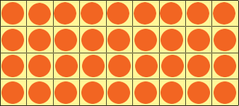

ARRAYS
WHAT IS AN ARRAY?
An array is a data structure made up of a collection of multiple elements.
It can hold primitive data types, or objects.

Arrays taught in mathematics are similar to Java arrays.
HOW DO I MAKE AN ARRAY?
Don't fret! Understanding how to use an Array is easy! This is the basic
outline of how to declare an array.
type [] name = new type[num of elements];
So if you were to declare an array of 10 integer values called
"intArray", you would type into your IDE:
int [] intArray = new int[10]
Alternatively, if you were to create an array to hold 15 BankAccount objects
called bankAccountArr, you would type in this:
BankAccount[] bankAccountArr = new BankAccount[15]
Lastly, you can declare an array with pre-existing values by doing this:
int[] intArray = {1, 2, 3, 4, 5, 6, 7, 8, 9, 10}
This would create an array of 10 integers called intArray, with all 10
indexes filled with a pre-existing int values.
WHAT CAN I DO WITH THIS ARRAY?
Arrays are special. In general, there are only three things you can
do with an array: Access values, modify values, and access it's length.
Accessing an array's variables is simple. You would type: name[index] to access the variable. Here is an example.
int value = intArray[5];
This line allows you to store the SIXTH element into value. Now something about this is special. Instead of accessing the fifth element, you are actually accessing the sixth
element. Now why is this? This is because the index of arrays start at ZERO, not ONE. That means when accessing an array of ten digits, you'd write:
value = intArray[0] to access the first element,
value = intArray[1] to access the second element,
value = intArray[9] to access the tenth/last element of the array.
Another thing you can do with arrays is modify elements inside the array. Think of an array and it's index as a collection of related variables, but with different indexes. To
modify an element in the array, you use the "=" operator, just as you would if you were modifying a variable.
intArray[0] = 5;
This would reassign the first value of the array to 5.
The last thing you can do with an array is access it's length, but not modify the length.
int arrayLength = intArray.length;
Unlike the length() method that Strings use, length is a field in arrays, meaning you access the variable directly, rather than calling a method to return the length. One caution
to take is that length returns the number of elements inside the array. It does not return the last index of the array, meaning when trying to access the last element of an
array with an unknown length, the last element would be
arrayLength = unknownArray[unknownArray.length - 1];
If you do not subtract one, it will throw an ArrayIndexOutOfBoundsException, which is thrown when an index is out of bounds.
 Array indexes and length.
Array indexes and length.
WHEN DO I USE AN ARRAY?
Arrays are used to store collections of related data, so that they can be proccessed
together. Accessing arrays are also O(1) time complexity, making it as efficient as variables.
Instead of writing
int a1 = 1;
int a2 = 2;
int a3 = 3;
You could simplify that to
int[] a = {1, 2, 3};
Now image this, but with 50000 elements. Rather than typing all variables by
hand, you could just declare the array to 50000 length.
Although, using arrays to store non-relative variables is strongly discouraged,
as this causes the code to be harder to read, and needs you to remember the index of
all elements. This also makes it harder for future code maintenance.
Common reasons to use arrays are
- Storing values to be sorted
- In real life applications, it can hold a bank account information or
- Store student information on a record
- Arrays also allow you to search for a specific element, and perform an operation on it
USING ARRAYS WITH FOR LOOPS
Arrays and for loops work perfectly with each other. With for loops, you can:
- Search an array
- Sort an Array
- Modify an array
- AND MORE!
For loops can be used in tandem with arrays to modify the array, by
adding elements or modifying elements.
| Adding elements to a blank array |
Modifying elements in a predetermined array |
//Add elements to an array
int[] intArray = new int[10];
for(int x = 0; x < intArray.length; x++){
intArray[x] = 5; //Changes all elements in the array to 5
}
|
//Modify elements in an array
String[] stringArray = new String{"hello", "my", "name", "is", "bill"}
for(int x = 0; x < stringArray.length; x++){
stringArray[x] = stringArray[x] + "modified!"; //Adds "modified!" to every element
}
|
As you can see, adding and modifying arrays revolve around the basic concept
of having a for loop that goes from start to end, then using the "=" operator
to modify or add elements to an array.
2D ARRAYS
2D arrays in java are essentially just 1D arrays, in which each element is
another array that holds elements of one type. Here is the basic outline for creating one:
type[][]name = new type[rows][columns];
or
type[][]name = {{/*elements*/}, {/*elements}, /*As many rows as you'd like};
So if you were to create a 2D array with 5 columns and 3 rows that is predefined, you could do this:
int[][]arr = {{1,2,3,4,5},{5,4,3,2,1},{1,3,4,5,6}};
To traverse a 2D array, use the "row column" method, which works as such:
for(int row = 0; row < arr.length; row++){
for(int column = 0; column < arr[0].length, column++){
//your code
}
}
As you can see, it is quite simple. Remember to do arr[0].length to obtain
column length, since it gets the length of the 1D array within the first
element of the 2D array.
PASSING ARRAYS AS METHOD PARAMETERS
In Java, arrays are special when it comes to passing arrays as
parameters. Like objects, arrays are pass-by-reference.
Passing by reference in Java is defined by passing the memory location,
or reference of an argument as a parameter. This means that when the argument
is modified in a method, the actual object/array passed in changed. This is
the opposite of passing by value, which primitive data types and String arguments use,
which is why they are not actually changed when the method alters it within the method.
This also means that the reference of array CAN NOT be changed within a method.
That means if you type
thisArray = thatArray; within a method, the array
will not be changed.
This is beneficial, because you can modify an array directly in a method
rather than having to return a new array. If you don't want the array to be
changed, just create a copy of the array and perform the processes on the
copied array.

Passing an array by reference.
Analysis
Arrays are used heavily in programming, as they store collections of related information
of the same type. For example, you could store a !D array of students at a school, or a
2D array where rows represent students, and columns represent their number. This way, you
can sort the students by name or their number, as they are all in an array.
1D arrays are easy! To create one, you just type type [] name = new type[num of elements];
. They are able to hold both objects AND primitive integers, except one of their
disadvantages is that it's length is not dynamic, and stays constant. Once you declare an
array, it's length can not be changed, but it's contents can be changed. Just use
the "=" operator, just as if you were changing a variable. After all, an array is
just a collection of related variables of one type. To traverse an array, you can use
for loops, starting at 0. It's last element will always be length - 1, keep that in mind.
Lastly, just know that arrays behave like objects when passing them to methods. They will
be changed by the method, but it's reference won't be changed. If you don't want the
contents to change in a method, then just create a copy of that array.
2D arrays are a different story. Their basic fundamentals are exactly the same as 1D
arrays. The only difference is that 2D arrays is a 1D array, with each element being
another array. To traverse the array, create the first for loop that counts
up to row.length - 1, and a nested for loop that counts up to column.length - 1. That's it!
Tips when working with Arrays
- One of the biggest mistakes newbies make when using Arrays is forgetting
that the Array's index goes from 0 to Array.length - 1.
- When passing an array as a parameter, REMEMBER THAT IT IS PASS BY REFERENCE!
This means that if you don't want the array to be changed, create a new array copy.
PROBLEM: Given this array: {5, 7, 6, 8, 9, 12, 15}, you must find
the largest number, then create a new 2D array, that is 5x5 and only contains
that number.
SOLUTION:
|
int[] arr = {5, 7, 6, 8, 9, 12, 15}; //The given array
int highest = INTEGER_MIN; //Lowest int value possible
//For loop that traverses the array
for(int x = 0; x < arr.length; x++){
if(arr[x] > highest) //Checks if value at index x is bigger than current highest
highest = arr[x]; //Sets the highest to the value at index, if higher
}
int[][] onlyHighest = new int[5][5] //Creates 5x5 int array
//These two nested for loops traverse the array
for(int row = 0; row < onlyHighest.length; row++){
for(int col = 0; col < onlyHighest[0].length; col++){
onlyHighest[row][col] = highest;
}
}
How I solved this problem: First I created an int, highest, and set it to
INTEGER_MIN. I did this so I can compare it to every element of the array, and
set a new highest number if it is larger. I then used a for loop that iterated
through each element of the array to check if the element at that index is higher
that the highest. If it was, then the highest would be set to that
value.
After, I initialized a 2D array of 5 rows and 5 columns. I created a nested
for loop that used the row column method I taught earlier. The first for loop
iterates from 0 to arr.length, and the nested for loop iterates from 0 to
arr[0].length. I then iterated through every element and set each element
to highest.
|